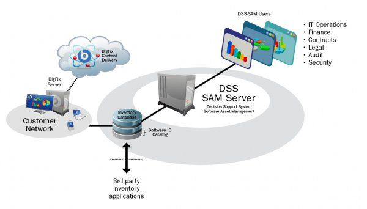
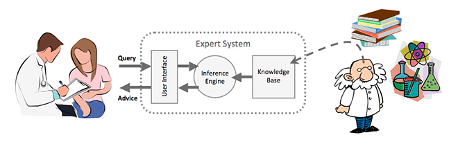
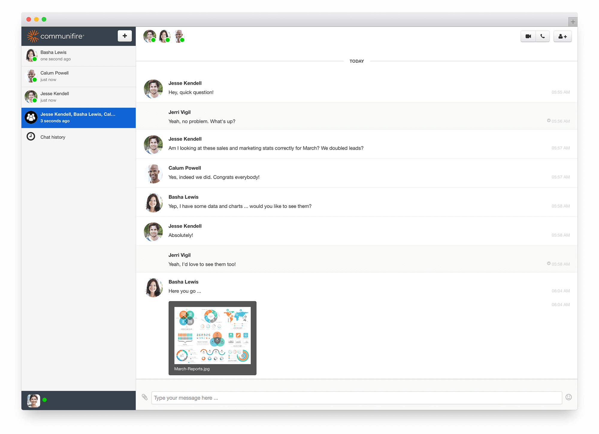

A decision support system (DSS) is a computer-based information system that supports business or organizational decision-making activities. DSSs serve the management, operations, and planning levels of an organization (usually mid and higher management) and help people make decisions about problems that may be rapidly changing and not easily specified in advance—i.e. Unstructured and Semi-Structured decision problems. Decision support systems can be either fully computerized, human-powered or a combination of both.
While academics have perceived DSS as a tool to support decision making process, DSS users see DSS as a tool to facilitate organizational processes. Some authors have extended the definition of DSS to include any system that might support decision making and some DSS include a decision-making software component; Sprague (1980)defines a properly termed DSS as follows:
DSS tends to be aimed at the less well structured, underspecified problem that upper level managers typically face;
DSS attempts to combine the use of models or analytic techniques with traditional data access and retrieval functions;
DSS specifically focuses on features which make them easy to use by non-computer-proficient people in an interactive mode; and
DSS emphasizes flexibility and adaptability to accommodate changes in the environment and the decision making approach of the user.
DSSs include knowledge-based systems. A properly designed DSS is an interactive software-based system intended to help decision makers compile useful information from a combination of raw data, documents, and personal knowledge, or business models to identify and solve problems and make decisions.
Typical information that a decision support application might gather and present includes:
inventories of information assets (including legacy and relational data sources, cubes, data warehouses, and data marts),
comparative sales figures between one period and the next,
projected revenue figures based on product sales assumptions.

In artificial intelligence, an expert system is a computer system that emulates the decision-making ability of a human expert.Expert systems are designed to solve complex problems by reasoning about knowledge, represented mainly as if–then rules rather than through conventional procedural code.The first expert systems were created in the 1970s and then proliferated in the 1980s.Expert systems were among the first truly successful forms of artificial intelligence (AI) software.
An expert system is divided into two subsystems: the inference engine and the knowledge base. The knowledge base represents facts and rules. The inference engine applies the rules to the known facts to deduce new facts. Inference engines can also include explanation and debugging abilities.

LEVEL OF INFORMATION SYSTEM
At the top is the corporate information that is useful for the whole organisation. This global information is generally fairly well addressed by the corporate intranet (even if the intranet itself needs improvement).
Examples of corporate information include policies and procedures, HR information, online forms, phone directory, etc.
Interestingly, there may be a limited amount of truly global information, and it may not deliver the greatest (measurable) business benefits.

The middle level is perhaps the most interesting, as it covers all the information shared within teams, divisions, business units, etc. This information may be critical to the day-to-day activities of the group, but of little interest to the rest of the organisation.
Examples include project documentation, business unit specific content, meeting minutes, etc.
This level is generally poorly-served within organisations, although collaboration tools are increasingly being used to address team information needs. It is also being recognised that it is this ‘local’ information that may be the most valuable, in terms of driving the day-to-day activity of the organisation.
At the lowest level is the personal information needs of staff throughout the organisation. Examples include correspondence (both internal and external), reports and spreadsheets.
In most organisations, staff must struggle with using e-mail to meet their information management needs. While staff generally recognise the inadequacy of e-mail, they have few other approaches or technologies at their disposal.
Note that some organisations (such as consulting firms) are heavily dependent on personal information management amongst their staff.
Communication Tools
Having a central portal where everybody can access all the relevant information, communications, documents, and contracts in one place.
Social intranet software not only makes this possible, but saves your business money by lowering IT maintenance costs. In this age of BYOD and telecommuting, an intranet solution makes for a more flexible workforce ... which ups productivity by ensuring all employees are working towards the same goals.
Project teams and groups need tools to help them be more effective in the workplace. Without a platform or designated spaces where they can collaborate, it becomes difficult to keep tabs on their progress. Being able to bring your teams together also helps them be more effective and provides an easy way of reporting progress.
Collaborative spaces with private, group messaging, and chat capabilities provide the perfect business communication tools to keep teams working together. Such spaces are important when business communication managers need updates on the progress of projects or when they need to communicate with team members.
This is especially important when employees are spread across geographical locations in different time zones. While public spaces like Facebook Groups may work, dedicated intranet chat services ensure everyone is just a tap away. They can also be used to share files (with a drag and drop function) and to search for a contact or conversation in order to refer to something from the past.

The common saying is “people eat with their eyes.” When your content looks good, people will want to read it. Great content will be the defining factor as to whether your internal teams will be engaged or not. If you have low engagement from employees, little or no feedback, and an increasing ratio of lurkers to active participants, the type of content you post is likely the problem.
The brain processes visual information 60,000 times faster than text. It’s therefore a no brainer that when you start to use images and videos across your intranet, you are going to get more traction and engagement from your employees. Infographics are another way to increase engagement.
Creating training videos, videos messages from top-level managers, behind-the-scenes footage, and then posting them across the intranet is likely to increase engagement and retention among employees.
Infographics are especially suited for marketing departments and for demonstrating and explaining processes. They are visually appealing and help communicate instructions quickly and easily.

IS INFRASTRUCTURE
A well designed Information System infrastructure is the foundation of a successful computerized environment. The utilization of computers in daily office operation has become a key to productivity and efficiency. While a simple network of connected workstations may meet the basic requirements of file sharing, a proper IS infrastructure shall employ your equipments in a more effective manner, streamline your workflow, and enhance system security.